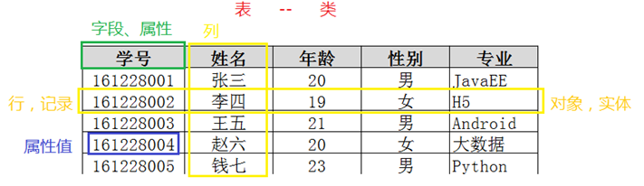
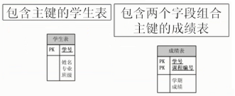
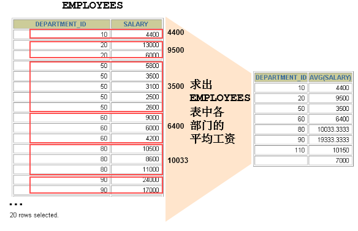
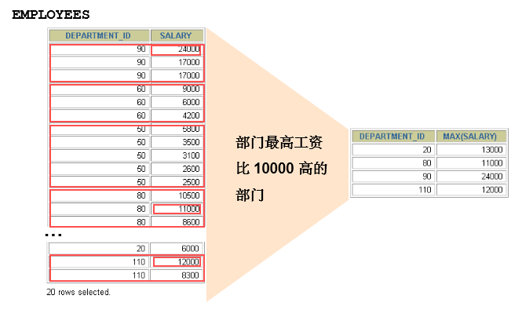
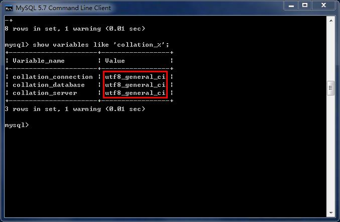

第一章 数据库概述
1.1什么是数据库
数据库是一种存储并管理数据的软件系统
存储：持久化
管理：增删改查
常用的存储数据的方式：
1、Java中的变量：生命周期短，不能实现持久化
2、序列化：管理数据时依赖于Java中的反序列化
3、txt，办公软件：没有统一的方式管理数据
4、数据库
1.2 数据库概述
DBMS：关系型数据库管理系统（Database Management System）是一种操纵和管理数据库的大型软件，例如建立、使用和维护数据库。
DB：数据库（Database）
SQL：结构化查询语言，（Structure Query Language），专门用来操作/访问数据库的通用语言。
MySQL：其中的一款关系型数据库管理系统
以下是2019年DB-Engines Ranking 对各数据库受欢迎程度进行调查后的统计结果：（查看数据库最新排名:https://db-engines.com/en/ranking）

关系型数据库，采用关系模型来组织数据，简单来说，关系模型指的就是二维表格模型。类似于Excel工作表。
特点：
所存储的数据有一定的关系
将数据存储在磁盘上
重在持久化
非关系型数据库（NOSQL,not only sql），可看成传统关系型数据库的功能阉割版本，基于键值对存储数据，通过减少很少用的功能，来提高性能。
特点：
以key-value或json的方式存储数据
将数据存储在内存中
重在性能，读取速度快
关系型数据库设计规则
遵循ER模型
- E entity 代表实体的意思 对应到数据库当中的一张表
- R relationship 代表关系的意思
具体体现
- 将数据放到表中，表再放到库中。
- 一个数据库中可以有多个表，每个表都有一个名字，用来标识自己。表名具有唯一性。
- 表具有一些特性，这些特性定义了数据在表中如何存储，类似java和python中 “类”的设计。
- 表由列组成，我们也称为字段。每个字段描述了它所含有的数据的意义，数据表的设计实际上就是对字段的设计。创建数据表时，为每个字段分配一个数据类型，定义它们的数据长度和字段名。每个字段类似java 或者python中的“实例属性”。
- 表中的数据是按行存储的，一行即为一条记录。每一行类似于java或python中的“对象”。

1.3 MySQL概述
MySQL是一种开放源代码的关系型数据库管理系统，开发者为瑞典MySQL AB公司。在2008年1月16号被Sun公司收购。而2009年,SUN又被Oracle收购。目前 MySQL被广泛地应用在Internet上的中小型网站中。由于其体积小、速度快、总体拥有成本低，尤其是开放源码这一特点，使得很多互联网公司选择了MySQL作为网站数据库（Facebook, Twitter, YouTube，阿里的蚂蚁金服，去哪儿，魅族，百度外卖，腾讯）。

1.4 Mysql软件的卸载、安装和配置
见《MySQL5.7安装文档.md》
第二章 MySQL的使用
2.1 MySQL服务的启动
“我的电脑/计算机”-->右键-->“管理”-->“服务”-->启动和关闭MySQL服务
“开始菜单”-->“控制面板”-->“管理工具”-->“服务”-->启动和关闭MySQL
“任务管理器”-->“服务”-->启动和关闭MySQL


或者
命令行
net start MySQL服务名net stop MySQL服务名2.2 客户端连接MySQL
1、命令行客户端：
xxxxxxxxxxmysql -h 主机IP地址 -P 端口号 -u 用户名 -p回车Enter Password:密码如果访问本机，-h localhost可以省略
如果端口号没有修改，-P 3306可以省略
除了-p与密码之间不要空格外，其他的-h,-P,-u与后面的参数值之间可以有空格
想要连接成功，必须保证服务开启的
2、其他客户端，例如：可视化工具Navicat或SQLyog等

第三章 MySQL数据类型和运算符
3.1 MySQL数据类型
整型系列：xxxInt
int(5)，必须和unsigned zerofill一起使用才有意义
unsigned：无符号字符，将整形的范围变为从0开始，同时所对应的范围也会发生变化
zerofill：0填充，当设置了整形的宽度时，若为该字段所设置的值不够宽度的要求，则会在数据之前补0，以达到宽度的要求

浮点型系列：float,double
double(M,D)：表示最长为M位，其中小数点后D位
例如：double(5,2)表示的数据范围[-999.99,999.99]，如果超过这个范围会报错。
定点型系列：decimal
decimal(M,D)：表示最长为M位，其中小数点后D位
字符串类型：char,varchar(M),text
char如果没有指定宽度，默认为1个字符
varchar(M)，必须指定宽度
日期时间类型：year, date, datetime, timestamp
注意一下每一种日期时间的表示范围

其他类型：bit（0或1）, xxBlob, 枚举，集合等
TinyBlob 最大 255B Blob 最大 65K MediumBlob 最大 16M LongBlob 最大 4G
xxxxxxxxxx+----------------+--------------+------+-----+---------+----------------+| Field | Type | Null | Key | Default | Extra |+----------------+--------------+------+-----+---------+----------------+| eid | int(11) | NO | PRI | NULL | auto_increment || ename | varchar(20) | NO | | NULL | || tel | char(11) | NO | | NULL | || gender | char(1) | YES | | 男 | || salary | double | YES | | NULL | || commission_pct | double(3,2) | YES | | NULL | || birthday | date | YES | | NULL | || hiredate | date | YES | | NULL | || job_id | int(11) | YES | | NULL | || email | varchar(32) | YES | | NULL | || mid | int(11) | YES | | NULL | || address | varchar(150) | YES | | NULL | || native_place | varchar(10) | YES | | NULL | || did | int(11) | YES | | NULL | |+----------------+--------------+------+-----+---------+----------------+
3.2 MySQL运算符
1、算术运算符
xxxxxxxxxx加：+减：-乘：*除：/ div（只保留整数部分）模：% mod
2、比较运算符
xxxxxxxxxx大于：>小于：<大于等于：>=小于等于：>=等于：= 不能用于null判断不等于：!= 或 <>安全等于：<=> 可以用于null值判断
3、逻辑运算符（建议用单词，可读性来说）
xxxxxxxxxx逻辑与：&& 或 and逻辑或：|| 或 or逻辑非：! 或 not逻辑异或：^ 或 xorxor：只能满足其中的一个条件，不能同时满足，也不能都不满足，结果A∪B-A∩B
4、范围
xxxxxxxxxx区间范围：between x and y not between x and y集合范围：in (x,x,x) not in(x,x,x)5、模糊查询（只针对字符串类型，日期类型）
xxxxxxxxxxlike 'xxx'如果想要表示0~n个字符，用%如果想要表示确定的1个字符，用_
6、位运算符（很少使用）
左移：<< 右移：>> 按位与：& 按位或：| 按位异或：^
7、特殊的null值处理
#（1）判断时 xx is null xx is not null xx <=> null #(2)计算时 ifnull(xx,代替值) 当xx是null时，用代替值计算
/*一、运算符
1、算术运算符
+：加
-：减
*：乘
/：除 可以保留小数部分
div：除 如果整数与整数相除只保留整数部分
%：求余数
mod：求余数
*/
select 1+1;
select 1/2; #0.5
select 1 div 2; #0
/*
2、比较运算符
>：大于
<：小于
=：等于 注意区别，Java中是==,mysql中是=
>=：大于等于
<=：小于等于
!=：不等于
<>：不等于
<=>：安全等于 用于判断null值的比较运算符
null值的判断，习惯上我们用is null 和is not null
*/
#查询薪资大于20000元的员工
select * from t_employee where salary > 20000;
#查询所有男员工
select * from t_employee where gender = '男';
select * from t_employee where gender != '女';
select * from t_employee where gender <> '女';
#查询奖金比例commision_pct是null的员工
select * from t_employee where commission_pct <=> null;
select * from t_employee where commission_pct is null;
/*
3、逻辑运算符
&&和and：逻辑与
两个条件同时满足
||和or：逻辑或
两个条件满足任意一个
^和xor：逻辑异或
两个条件只能满足其中一个
!和not：
不满足xx条件
*/
#查询薪资大于20000元的女员工
select * from t_employee where salary > 20000 && gender = '女';
select * from t_employee where salary > 20000 and gender = '女';
#查询男员工
select * from t_employee where not gender = '女';
select * from t_employee where !(gender = '女');
#查询薪资大于10000 异或 性别是男的，即它俩只能满足一个
#即查询薪资大于10000的女的或薪资低于10000的男的
select * from t_employee where salary>10000 ^ gender ='男';
select * from t_employee where salary>10000 xor gender ='男';
/*
4、范围
（1）区间范围：
在[a,b]之间，between a and b
不在[a,b]之间，not between a and b
（2）集合范围
in(...)
not in(...)
*/
#查询薪资在[15000,20000]之间的员工
select * from t_employee where salary between 15000 and 20000;
select * from t_employee where salary >= 15000 and salary <=20000;
#查询薪资在9000,10000,12000
select * from t_employee where salary in(9000,10000,12000);
select * from t_employee where salary =9000 || salary =10000 || salary =12000;
/*
5、模糊查询
like '%x%' x代表确定的字符 %表示不确定的0~n个字符
'_x%' x代表确定的字符 _表示确定的1个字符
*/
#查询，名字ename中包含“冰”这个字的员工
select * from t_employee where ename like '%冰%';
#查询，名字ename是张xx，三个字
select * from t_employee where ename like '张__';
#查询，名字ename是第二个字是'冰'
select * from t_employee where ename like '_冰%';
第四章 SQL
4.1 MySQL的语法规范和要求
（1）mysql的sql语法不区分大小写
MySQL的关键字和函数名等不区分大小写，但是对于数据值是否区分大小写，和字符集与校对规则有关。
ci（大小写不敏感），cs（大小写敏感），_bin（二元，即比较是基于字符编码的值而与language无关，区分大小写）
（2）命名时：尽量使用26个英文字母大小写，数字0-9，下划线，不要使用其他符号
studentName-->student_name
（3）建议不要使用mysql的关键字等来作为表名、字段名等，如果不小心使用，请在SQL语句中使用`（飘号）引起来
（4）数据库和表名、字段名等对象名中间不要包含空格
（5）同一个mysql软件中，数据库不能同名，同一个库中，表不能重名，同一个表中，字段不能重名
（6）标点符号：
必须成对
必须英文状态下半角输入方式
字符串和日期类型可以使用单引号''
列的别名可以使用双引号""，给表名取别名不要使用双引号。取别名时as可以省略
如果列的别名没有包含空格，可以省略双引号，如果有空格双引号不能省略。
（7）SQL脚本中如何加注释
单行注释：#注释内容
单行注释：--空格注释内容 其中--后面的空格必须有
多行注释：/* 注释内容 */
#以下两句是一样的，不区分大小写
show databases;
SHOW DATABASES;
#创建表格
#create table student info(...); #表名错误，因为表名有空格
create table student_info(...);
#其中name使用``飘号，因为name和系统关键字或系统函数名等预定义标识符重名了。
CREATE TABLE t_stu(
id INT,
`name` VARCHAR(20)
);
select id as "编号", `name` as "姓名" from t_stu; #起别名时，as都可以省略
select id as 编号, `name` as 姓名 from t_stu; #如果字段别名中没有空格，那么可以省略""
select id as 编 号, `name` as 姓 名 from t_stu; #错误，如果字段别名中有空格，那么不能省略""
4.2 SQL分类
DDL：数据定义语言，定义库，表结构等，包括create,drop,alter等
DML：数据操作语言，增删改查数据，包括insert,delete,update,select等
DCL：数据控制语言，权限，事务等管理。
DQL：数据查询语言，select
4.3 DDL(v1.0)
1、查看所有数据库
show databases;
2、指定使用某个数据库
use 数据库名;
3、创建数据库
create database 数据库名;
create database 数据库名 charset 'utf8'; #在mysql中字符集名称不要使用utf-8
create database 数据库名 charset 'gbk';
4、删除数据库
drop database 数据库名;
5、查看某个库下的所有表格
show tables ; #前提是前面有use 数据库名;的语句
show tables from 数据库名;
6、创建表格
create table 【数据名.】表名(
字段名1 数据类型,
字段名2 数据类型,
....
);
7、删除表格
drop table 【数据库名.]表名称;
8、查看某个表结构
describe 【数据库名.]表名称;
desc 【数据库名.]表名称;
9、增加一列
alter table 【数据库名.]表名称 add 【column】 字段名 数据类型;
alter table 【数据库名.]表名称 add 【column】 字段名 数据类型 first;
alter table 【数据库名.]表名称 add 【column】 字段名 数据类型 after 另一个字段;
10、删除一列
alter table 【数据库名.]表名称 drop 【column】 字段名;
11、修改列数据类型
alter table 【数据库名.]表名称 modify 【column】 字段名 新数据类型;
12、修改列名
alter table 【数据库名.]表名称 change【column】 旧字段名 新字段名 新数据类型;
13、修改列的位置
alter table 【数据库名.]表名称 modify 【column】字段名 数据类型 first;
alter table 【数据库名.]表名称 modify 【column】字段名 数据类型 after 另一个字段;
14、修改表名称
alter table 旧表名 rename 新表名;
rename table 旧表名 to 新表名;
4.4 DML(v1.0)
1、添加数据
insert into 【数据库名.]表名称 values(值列表)；
#要求值列表的顺序、个数、类型，要与表格中的字段的顺序、个数、类型一一匹配
insert into 【数据库名.]表名称(部分字段列表) values(值列表)；
#要求列表的顺序、个数、类型，要与前面的(部分字段列表)的顺序、个数、类型一一匹配
insert into 【数据库名.]表名称 values(值列表1)，(值列表2)。。。;
insert into 【数据库名.]表名称(部分字段列表) values(值列表1)，(值列表2)。。。;
2、修改数据
update 【数据库名.]表名称 set 字段名1 = 值1, 字段名2 = 值2 。。。 【where 条件】;
如果没有加where条件，表示修改所有行，这个字段的值
3、删除数据
delete from 【数据库名.]表名称 【where 条件】;
如果没有where条件，表示删除整张表的数据;
truncate 【数据库名.]表名称;#删除整张表的数据，还可以使用这个语句，效率更高，但是它不能回滚
用delete删除整张表和用truncate删除整张表的数据的区别？
（1）truncate速度快
（2）truncate无法回滚
truncate因为底层是把表drop掉，然后新建了一张空表。
delete因为底层是一行一行删数据。
4、简单查询数据
select * from 【数据库名.]表名称; #查询整张表的所有数据
select 字段列表 from 【数据库名.]表名称; #查询部分列表
select * from 【数据库名.]表名称 【where 条件】;
select 字段列表 from 【数据库名.]表名称 【where 条件】;
使用distinct可以对查询结果进行去重（冗余）
第五章 数据库的导入和导出
5.1 导入和导出数据
5.1.1 单个数据库备份
mysql5.5
C:\Windows\System32> mysqldump -h主机地址 -P端口号 -u用户名 -p密码 --database 数据名 > 文件路径/文件名.sql
例如：
C:\Windows\System32>mysqldump -hlocalhost -P3306 -uroot -p123456 --database test > d:/test.sql

mysql5.7版
C:\Windows\System32> mysqldump -h主机地址 -P端口号 -u用户名 -p密码 数据名 > 文件路径/文件名.sql
不要再写--database
5.1.2 导入执行备份的sql脚本
先登录mysql，然后执行如下命令：
mysql> source sql脚本路径名.sql
例如：
mysql>source d:/test.sql;

第六章 约束与索引
6.1 关系型数据库设计规则
遵循ER模型和三范式
- E entity 代表实体的意思 对应到数据库当中的一张表
- R relationship 代表关系的意思
三范式：1、列不能拆分 2、唯一标识 3、关系引用主键
具体体现
- 将数据放到表中，表再放到库中。
- 一个数据库中可以有多个表，每个表都有一个名字，用来标识自己。表名具有唯一性。
- 表具有一些特性，这些特性定义了数据在表中如何存储，类似java和python中 “类”的设计。
- 表由列组成，我们也称为字段。每个字段描述了它所含有的数据的意义，数据表的设计实际上就是对字段的设计。创建数据表时，为每个字段分配一个数据类型，定义它们的数据长度和字段名。每个字段类似java 或者python中的“实例属性”。
- 表中的数据是按行存储的，一行即为一条记录。每一行类似于java或python中的“对象”。
6.2 约束与索引的概念
1、数据完整性（Data Integrity）是指数据的精确性（Accuracy）和可靠性（Reliability）。它是应防止数据库中存在不符合语义规定的数据和防止因错误信息的输入输出造成无效操作或错误信息而提出的。
数据的完整性要从以下四个方面考虑：
- 实体完整性（Entity Integrity）：例如，同一个表中，不能存在两条完全相同无法区分的记录
- 域完整性（Domain Integrity）：例如：年龄范围0-120，性别范围“男/女”
- 引用完整性（Referential Integrity）：例如：员工所在部门，在部门表中要能找到这个部门
- 用户自定义完整性（User-defined Integrity）：例如：用户名唯一、密码不能为空等，本部门经理的工资不得高于本部门职工的平均工资的5倍。
2、根据约束的特点，分为几种：
- 键约束：主键约束、外键约束、唯一键约束
- Not NULL约束：非空约束
- Check约束：检查约束
- Default约束：默认值约束
- 自增约束
3、约束（CONSTRAINTS）与索引（INDEX）
约束是用来对数据业务规则和数据完整性进行实施、维护。约束的作用范围仅限在当前数据库，约束可以被当做数据库对象来处理，它们具有名称和关联模式，是逻辑约束，不会因为设置约束而额外占用空间。
索引是一个单独、物理的存储在数据页上的数据库结构，它是表中一列或若干列值的集合和相应的指向表中数据值的物理标识数据页的逻辑指针清单（类似于新华字典的目录索引页）。索引的存在会增加数据库的存储空间，也会使插入、修改数据的时间开销变多(因为插入和修改数据时，索引也要随之变动），但是可以大大提高查询速度。因此应该在键列、或其他经常要查询、排序、按范围查找的列上建立索引，而对于在查询中很少使用和参考的列、修改非常频繁的列，值很少的列（例如性别只有男和女）等列上不应该创建索引。
Mysql会在主键、唯一键、外键列上自动创建索引，其他列需要建立索引的话，需要手动创建。
其中主键删除，对应的索引也会删除
删除唯一键的方式是通过删除对应的索引来实现的
删除外键，外键列上的索引还在，如果需要删除，需要单独删除索引
6.3 DDL(v2.0)
1、查看某个表的约束
SELECT * FROM information_schema.table_constraints WHERE table_name = '表名称';
或
SHOW CREATE TABLE 表名;
2、查看某个表的索引
SHOW INDEX FROM 表名称;
3、主键约束：primary key
主键分为单列主键和复合主键：

主键的特点：（1）唯一并且非空（2）一个表只能有一个主键约束（3）主键约束名就叫做PRIMARY（4）创建主键会自动创建对应的索引，同样删除主键对应的索引也会删除。
一个字段作为主键，该字段的值不能为null，不能重复
多个字段作为主键，每个作为主键的字段都可以重复，但是不能同时重复
（1）如何在建表时指定主键约束
create table 【数据名.】表名(
字段名1 数据类型 primary key ,
....
);
或
create table 【数据名.】表名(
字段名1 数据类型,
....,
primary key(字段名1)
);
或
create table 【数据名.】表名(
字段名1 数据类型,
字段名2 数据类型,
....,
primary key(复合主键字段列表)#如果是复合主键，那么就需要在所有字段列表后面使用这种形式指定，不能在字段后面直接加primary key
);
（2）如何在建表后指定主键约束
alter table 表名称 add primary key (主键字段列表);
（3）如何删除主键约束
alter table 表名称 drop primary key;
4、唯一键约束：unique key
（1）唯一键约束特点
- 唯一键约束列允许为null。
- 同一个表可以有多个唯一约束。
- 唯一约束可以是某一个列的值唯一，也可以多个列组合值的唯一。
- MySQL会给唯一约束的列上默认创建一个唯一索引。
- 删除唯一键只能通过删除对应索引的方式删除，删除时需要指定唯一键索引名
（2）如何在建表时指定唯一键约束
create table 【数据名.】表名(
字段名1 数据类型 primary key ,
字段名2 数据类型 unique key,
....
);
create table 【数据名.】表名(
字段名1 数据类型 primary key ,
字段名2 数据类型,
字段名3 数据类型,
....,
unique key(复合唯一字段列表)#如果是复合唯一键，那么就需要在所有字段列表后面使用这种形式指定，不能在字段后面直接加unique key
);
复合唯一约束，对于设置的整个字段列表有效，即单个的字段可以重复，但是所有字段不能同时重复
（3）如何在建表后增加唯一键约束
alter table 表名称 add 【constraint 约束名】 unique 【key】 (字段名列表);
#如果没有指定约束名，(字段名列表)中只有一个字段的，默认是该字段名，如果是多个字段的默认是字段名列表的第1个字段名。也可以通过show index from 表名;来查看
（4）如何删除唯一键约束
ALTER TABLE 表名称 DROP INDEX 唯一性约束名;
#注意：如果忘记名称，可以通过“show index from 表名称;”查看
5、外键约束：foreign key
表关系：
1、一对一
2、多对一
student(sid,sname,age,sex,cid)--clazz(cid,cname,location)
3、一对多
clazz(cid,cname,location)--student(sid,sname,age,sex,cid)
4、多对多
user(uid,username,password)
order(oid,create_time,total_count,total_amount,status,user_id)
order_goods(id,oid,gid)
goods(gid,gname,price,sales,stock)
（1）外键特点
- 外键约束是保证一个或两个表之间的参照完整性,外键是构建于一个表的两个字段或是两个表的两个字段之间的参照关系。
- 在创建外键约束时，如果不给外键约束名称，默认名不是列名，而是自动产生一个外键名（例如 student_ibfk_1;），也可以指定外键约束名。
- 当创建外键约束时，系统默认会在所在的列上建立对应的普通索引。但是索引名是列名，不是外键的约束名。
- 删除外键时，关于外键列上的普通索引需要单独删除。
（2）要求
- 在从表上建立外键，而且主表要先存在。
- 一个表可以建立多个外键约束
- 从表的外键列，在主表中引用的只能是键列（主键，唯一键，外键），推荐引用主表的主键。
- 从表的外键列与主表被参照的列名字可以不相同，但是数据类型必须一样
（3）约束关系：约束是针对双方的
- 添加了外键约束后，主表的修改和删除数据受约束
- 添加了外键约束后，从表的添加和修改数据受约束
- 在从表上建立外键，要求主表必须存在
- 删除主表时，要求从表从表先删除，或将从表中外键引用该主表的关系先删除
（4）5个约束等级
- Cascade方式：在父表上update/delete记录时，同步update/delete掉子表的匹配记录
- Set null方式：在父表上update/delete记录时，将子表上匹配记录的列设为null，但是要注意子表的外键列不能为not null
- No action方式：如果子表中有匹配的记录,则不允许对父表对应候选键进行update/delete操作
- Restrict方式：同no action, 都是立即检查外键约束
- Set default方式（在可视化工具SQLyog中可能显示空白）：父表有变更时,子表将外键列设置成一个默认的值，但Innodb不能识别
如果没有指定等级，就相当于Restrict方式
（5）如何在建表时指定外键约束
create table 【数据名.】从表名(
字段名1 数据类型 primary key ,
字段名2 数据类型 【unique key】,
....,
【constraint 外键约束名】 foreign key (从表字段) references 主表名(主表字段) 【on update 外键约束等级】【on delete 外键约束等级【
#外键只能在所有字段列表后面单独指定
#如果要自己命名外键约束名，建议 主表名_从表名_关联字段名_fk
);
create table 【数据名.】表名(
字段名1 数据类型,
字段名2 数据类型,
....,
primary key(复合主键字段列表),#如果是复合主键，那么就需要在所有字段列表后面使用这种形式指定，不能在字段后面直接加primary key
unique key(复合唯一字段列表),#如果是复合唯一键，那么就需要在所有字段列表后面使用这种形式指定，不能在字段后面直接加unique key
foreign key (从表字段) references 主表名(主表字段) 【on update 外键约束等级】【on delete 外键约束等级【
#外键只能在所有字段列表后面单独指定
);
（6）如何在建表后指定外键约束
alter table 从表名称 add 【constraint 外键约束名】 foreign key (从表字段名) references 主表名(主表被参照字段名) 【on update xx】[on delete xx];
（7）如何删除外键约束
ALTER TABLE 表名称 DROP FOREIGN KEY 外键约束名;
#查看约束名 SELECT * FROM information_schema.table_constraints WHERE table_name = '表名称';
#删除外键约束不会删除对应的索引，如果需要删除索引，需要用ALTER TABLE 表名称 DROP INDEX 索引名;
#查看索引名 show index from 表名称;
6、非空约束：not null
NOT NULL 非空约束，规定某个字段不能为空
（1）如何在建表时给某个字段指定非空约束
create table 【数据名.】表名(
字段名1 数据类型 primary key ,
字段名2 数据类型 【unique key】 【not null】,
....,
foreign key (从表字段) references 主表名(主表字段) 【on update 外键约束等级】【on delete 外键约束等级【
#外键只能在所有字段列表后面单独指定
);
create table 【数据名.】表名(
字段名1 数据类型 【not null】,
字段名2 数据类型 【not null】,
....,
primary key(复合主键字段列表),#如果是复合主键，那么就需要在所有字段列表后面使用这种形式指定，不能在字段后面直接加primary key
unique key(复合唯一字段列表),#如果是复合唯一键，那么就需要在所有字段列表后面使用这种形式指定，不能在字段后面直接加unique key
foreign key (从表字段) references 主表名(主表字段) 【on update 外键约束等级】【on delete 外键约束等级【
#外键只能在所有字段列表后面单独指定
);
（2）如何在建表后指定某个字段非空
ALTER TABLE 表名称 MODIFY 字段名 数据类型 NOT NULL 【default 默认值】;
#如果该字段原来设置了默认值约束，要跟着一起再写一遍，否则默认值约束会丢失
（3）如何在建表后取消某个字段非空
ALTER TABLE 表名称 MODIFY 字段名 数据类型 【default 默认值】;
#如果该字段原来设置了默认值约束，要跟着一起再写一遍，否则默认值约束会丢失
7、默认值约束：default
（1）如何在建表时给某个字段指定默认约束
create table 【数据名.】表名(
字段名1 数据类型 primary key ,
字段名2 数据类型 【unique key】 【not null】 【default 默认值】,
....,
foreign key (从表字段) references 主表名(主表字段) 【on update 外键约束等级】【on delete 外键约束等级【
#外键只能在所有字段列表后面单独指定
);
create table 【数据名.】表名(
字段名1 数据类型 【not null】 【default 默认值】,
字段名2 数据类型 【not null】 【default 默认值】,
....,
primary key(复合主键字段列表),#如果是复合主键，那么就需要在所有字段列表后面使用这种形式指定，不能在字段后面直接加primary key
unique key(复合唯一字段列表),#如果是复合唯一键，那么就需要在所有字段列表后面使用这种形式指定，不能在字段后面直接加unique key
foreign key (从表字段) references 主表名(主表字段) 【on update 外键约束等级】【on delete 外键约束等级【
#外键只能在所有字段列表后面单独指定
);
（2）如何在建表后指定某个字段的默认值约束
ALTER TABLE 表名称 MODIFY 字段名 数据类型 【default 默认值】 【NOT NULL】;
#如果该字段原来设置了非空约束，要跟着一起再写一遍，否则非空约束会丢失
（3）如何在建表后取消某个字段的默认值约束
ALTER TABLE 表名称 MODIFY 字段名 数据类型 【NOT NULL】;
#如果该字段原来设置了非空约束，要跟着一起再写一遍，否则非空约束会丢失
8、检查约束：check
检查约束，mysql暂不支持
create table stu(
sid int primary key,
sname varchar(20),
gender char check ('男'or'女')
);
insert into stu values(1,'张三','男');
insert into stu values(2,'李四','妖');
使用枚举类型解决如上问题：
create table stu(
sid int primary key,
sname varchar(20),
gender enum ('男','女')
);
9、自增约束：auto_increment
（1）关于自增长auto_increment：
一个表最多只能有一个自增长列
自增长列必须是键列（主键列，唯一键列，外键列），并且要求非空。
自增列必须是整数类型
InnoDB表的自动增长列可以手动插入，但是插入的值如果是空或者0，则实际插入的将是自动增长后的值。
每一次添加都会在上一次添加的基础上+1，跟当前表中的最大id无关
如何使自增的字段自动增长：
insert into 表名 values(null,...)
insert into t_user(username) values('admin')
（2）如何在建表时指定自增长列
create table 【数据名.】表名(
字段名1 数据类型 primary key auto_increment,
字段名2 数据类型 【unique key】 【not null】 【default 默认值】,
....
);
或
create table 【数据名.】表名(
字段名1 数据类型 primary key ,
字段名2 数据类型 【unique key not null】 auto_increment,
....
);
（3）如何在建表后指定自增长列
alter table 【数据名.】表名 modify 自增字段名 数据类型 auto_increment;
（4）如何删除自增约束
alter table 【数据名.】表名 modify 自增字段名 数据类型;
6.4 DML(v2.0)
1、如果某列有自增约束，怎么添加该字段的值
添加数据时，对于自增列
insert into 【数据库名.]表名称 values(值列表)；#在值列表中，对应自增列可以赋值为null和0
insert into 【数据库名.]表名称(部分字段列表) values(值列表)；#自增列在(部分字段列表)中不写就可以
2、如果某列有默认值约束，怎么添加、修改该字段的值
添加数据时，对于有默认值列
insert into 【数据库名.]表名称 values(值列表)；#在值列表中，对应默认值列，如果想用默认值，用default
insert into 【数据库名.]表名称(部分字段列表) values(值列表)；#对应默认值列，如果想用默认值，在(部分字段列表)中不写就可以
修改数据
update 【数据库名.]表名称 set 字段名1 = 值1, 字段名2 = 值2 。。。 【where 条件】; #对应默认值列，如果想用默认值，写字段名 = default就可以
第七章 函数
两种SQL函数

7.1单行函数**
- 只对一行进行变换，每行返回一个结果
- 可以嵌套
- 参数可以是一字段或一个表达式或一个值
7.1.1 字符串函数
| 函数 | 用法 |
|---|---|
| CONCAT(S1,S2,......,Sn) | 连接S1,S2,......,Sn为一个字符串 |
| CONCAT_WS(s, S1,S2,......,Sn) | 同CONCAT(s1,s2,...)函数，但是每个字符串之间要加上s |
| CHAR_LENGTH(s) | 返回字符串s的字符数 |
| LENGTH(s) | 返回字符串s的字节数，和字符集有关 |
| INSERT(str, index , len, instr) | 将字符串str从第index位置开始，len个字符长的子串替换为字符串instr |
| UPPER(s) 或 UCASE(s) | 将字符串s的所有字母转成大写字母 |
| LOWER(s) 或LCASE(s) | 将字符串s的所有字母转成小写字母 |
| LEFT(s,n) | 返回字符串s最左边的n个字符 |
| RIGHT(s,n) | 返回字符串s最右边的n个字符 |
| LPAD(str, len, pad) | 用字符串pad对str最左边进行填充，直到str的长度为len个字符 |
| RPAD(str ,len, pad) | 用字符串pad对str最右边进行填充，直到str的长度为len个字符 |
| LTRIM(s) | 去掉字符串s左侧的空格 |
| RTRIM(s) | 去掉字符串s右侧的空格 |
| TRIM(s) | 去掉字符串s开始与结尾的空格 |
| TRIM(【BOTH 】s1 FROM s) | 去掉字符串s开始与结尾的s1 |
| TRIM(【LEADING】s1 FROM s) | 去掉字符串s开始处的s1 |
| TRIM(【TRAILING】s1 FROM s) | 去掉字符串s结尾处的s1 |
| REPEAT(str, n) | 返回str重复n次的结果 |
| REPLACE（str, a, b） | 用字符串b替换字符串str中所有出现的字符串a |
| STRCMP(s1,s2) | 比较字符串s1,s2 |
| SUBSTRING(s,index,len) | 返回从字符串s的index位置其len个字符 |
- 举例1：大小写控制函数
| 函数 | 结果 |
|---|---|
| LOWER('SQL Course') | sql course |
| UPPER('SQL Course') | SQL COURSE |
这类函数改变字符的大小写。
- 举例2：字符控制函数
| 函数 | 结果 |
|---|---|
| CONCAT('Hello','World') | HelloWorld |
| SUBSTR('HelloWorld',1,5) | Hello |
| LENGTH('HelloWorld') | 10 |
| INSTR('HelloWorld','W') | 6 |
| LPAD(salary,10,'*') | *****24000 |
| RPAD(salary,10, '*') | 24000***** |
| TRIM('H' FROM 'HelloWorld') | elloWorld |
| REPLACE('abcd','b','m') | amcd |
7.1.2 数值函数/数学函数
| 函数 | 用法 |
|---|---|
| ABS(x) | 返回x的绝对值 |
| CEIL(x) | 返回大于x的最小整数值 |
| FLOOR(x) | 返回小于x的最大整数值 |
| MOD(x,y) | 返回x/y的模 |
| RAND() | 返回0~1的随机值 |
| ROUND(x,y) | 返回参数x的四舍五入的有y位的小数的值 |
| TRUNCATE(x,y) | 返回数字x截断为y位小数的结果 |
| SQRT(x) | 返回x的平方根 |
| POW(x,y) | 返回x的y次方 |
- 举例1：ROUND:四舍五入
ROUND(45.926, 2) --> 45.93
- 举例2：TRUNCATE:截断
TRUNCATE(45.926) --> 45
- 举例3：MOD:求余
MOD(1600, 300) --> 100
7.1.3 日期函数
| 函数 | 用法 |
|---|---|
| CURDATE() 或 CURRENT_DATE() | 返回当前日期 |
| CURTIME() 或 CURRENT_TIME() | 返回当前时间 |
| NOW() / SYSDATE() / CURRENT_TIMESTAMP() / LOCALTIME() / LOCALTIMESTAMP() | 返回当前系统日期时间 |
| YEAR(date) / MONTH(date) / DAY(date) / HOUR(time) / MINUTE(time) / SECOND(time) | 返回具体的时间值 |
| WEEK(date) / WEEKOFYEAR(date) | 返回一年中的第几周 |
| DAYOFWEEK() | 返回周几，注意：周日是1，周一是2，。。。周六是7 |
| WEEKDAY(date) | 返回周几，注意，周1是0，周2是1，。。。周日是6 |
| DAYNAME(date) | 返回星期：MONDAY,TUESDAY.....SUNDAY |
| MONTHNAME(date) | 返回月份：January，。。。。。 |
| DATEDIFF(date1,date2) / TIMEDIFF(time1, time2) | 返回date1 - date2的日期间隔 / 返回time1 - time2的时间间隔 |
| DATE_ADD(datetime, INTERVAL expr type) | 返回与给定日期时间相差INTERVAL时间段的日期时间 |
| DATE_FORMAT(datetime ,fmt) | 按照字符串fmt格式化日期datetime值 |
| STR_TO_DATE(str, fmt) | 按照字符串fmt对str进行解析，解析为一个日期 |
其中：
（1）DATE_ADD(datetime,INTERVAL expr type)
表达式类型：
| 参数类型 | 参数类型 |
|---|---|
| YEAR | YEAR_MONTH |
| MONTH | DAY_HOUR |
| DAY | DAY_MINUTE |
| HOUR | DAY_SECOND |
| MINUTE | HOUR_MINUTE |
| SECOND | HOUR_SECOND |
| MINUTE_SECOND |
举例：
SELECT DATE_ADD(NOW(), INTERVAL 1 YEAR);
SELECT DATE_ADD(NOW(), INTERVAL -1 YEAR); #可以是负数
SELECT DATE_ADD(NOW(), INTERVAL '1_1' YEAR_MONTH); #需要单引号
（2）DATE_FORMAT(datetime,fmt) 和 STR_TO_DATE(str, fmt)
| 格式符 | 说明 | 格式符 | 说明 |
|---|---|---|---|
| %Y | 4位数字表示年份 | %y | 表示两位数字表示年份 |
| %M | 月名表示月份（January,....） | %m | 两位数字表示月份（01,02,03。。。） |
| %b | 缩写的月名（Jan.，Feb.，....） | %c | 数字表示月份（1,2,3,...） |
| %D | 英文后缀表示月中的天数（1st,2nd,3rd,...） | %d | 两位数字表示月中的天数(01,02...) |
| %e | 数字形式表示月中的天数（1,2,3,4,5.....） | ||
| %H | 两位数字表示小数，24小时制（01,02..） | %h和%I | 两位数字表示小时，12小时制（01,02..） |
| %k | 数字形式的小时，24小时制(1,2,3) | %l | 数字形式表示小时，12小时制（1,2,3,4....） |
| %i | 两位数字表示分钟（00,01,02） | %S和%s | 两位数字表示秒(00,01,02...) |
| %W | 一周中的星期名称（Sunday...） | %a | 一周中的星期缩写（Sun.，Mon.,Tues.，..） |
| %w | 以数字表示周中的天数(0=Sunday,1=Monday....) | ||
| %j | 以3位数字表示年中的天数(001,002...) | %U | 以数字表示年中的第几周，（1,2,3。。）其中Sunday为周中第一天 |
| %u | 以数字表示年中的第几周，（1,2,3。。）其中Monday为周中第一天 | ||
| %T | 24小时制，%H:%i:%s | %r | 12小时制 |
| %p | AM或PM | %% | 表示% |
7.1.4 流程函数
| 函数 | 用法 |
|---|---|
| IF(value,t ,f) | 如果value是真，返回t，否则返回f |
| IFNULL(value1, value2) | 如果value1不为空，返回value1，否则返回value2 |
| CASE WHEN 条件1 THEN result1 WHEN 条件2 THEN result2 .... [ELSE resultn] END | 相当于Java的if...else if...else... |
| CASE expr WHEN 常量值1 THEN 值1 WHEN 常量值1 THEN 值1 .... [ELSE 值n] END | 相当于Java的switch...case... |
- 举例1：
SELECT employee_id,12 * salary * (1 + IFNULL(commission_pct,0)) as "年薪"
FROM employees;
- 举例2：
SELECT last_name, job_id, salary,
CASE job_id WHEN 'IT_PROG' THEN 1.10*salary
WHEN 'ST_CLERK' THEN 1.15*salary
WHEN 'SA_REP' THEN 1.20*salary
ELSE salary END "实发工资"
FROM employees;
- 举例3：
SELECT employee_id,salary, CASE WHEN salary>=15000 THEN '高薪' WHEN salary>=10000 THEN '潜力股' WHEN salary>=8000 THEN '屌丝' ELSE '草根' END "描述" FROM employees;
7.1.5 其他函数
| 函数 | 用法 |
|---|---|
| database() | 返回当前数据库名 |
| version() | 返回当前数据库版本 |
| user() | 返回当前登录用户名 |
| password(str) | 返回字符串str的加密版本，41位长的字符串 |
| md5(str) | 返回字符串str的md5值，也是一种加密方式 |
7.2 分组函数
- 什么是分组函数
分组函数作用于一组数据，并对一组数据返回一个值。
组函数类型
- AVG()
- SUM()
- MAX()
- MIN()
- COUNT()
可以对数值型数据使用AVG 和 SUM 函数。
SELECT AVG(salary), MAX(salary),MIN(salary), SUM(salary)
FROM employees
WHERE job_id LIKE '%REP%';
可以对任意数据类型的数据使用 MIN 和 MAX 函数。
SELECT MIN(hire_date), MAX(hire_date)
FROM employees;
COUNT(*)count(1返回表中记录总数,适用于任意数据类型。
SELECT COUNT(*)
FROM employees
WHERE department_id = 50;
•COUNT(expr) 返回expr不为空的记录总数。
SELECT COUNT(commission_pct)
FROM employees
WHERE department_id = 50;
问题：用count(*)，count(1)谁好呢?
其实，对于myisam引擎的表是没有区别的。这种引擎内部有一计数器在维护着行数。
Innodb引擎的表用count(*)直接读行数，效率很低，因为innodb真的要去数一遍。
第八章 关联查询（联合查询）
8.1 关联查询的七种结果

（1）A∩B
（2）A
（3）A - A∩B
（4）B
（5）B - A∩B
（6）A ∪ B
（7）A ∪B- A∩B 或者 (A - A∩B) ∪ （B - A∩B）
8.2 如何实现？
（1）内连接
（2）外连接：左外连接、右外连接、全外连接（mysql使用union代替全外连接）
1、内连接：实现A∩B
select 字段列表
from A表 inner join B表
on 关联条件
where 等其他子句;
或
select 字段列表
from A表 , B表
where 关联条件 and 等其他子句;
代码示例：
#查询员工的姓名和他所在的部门的名称
#员工的姓名在t_employee
#部门的名称在t_department
SELECT ename "员工的姓名",dname "部门名称"
FROM t_employee INNER JOIN t_department
ON t_employee.did = t_department.did
SELECT ename "员工的姓名",dname "部门名称"
FROM t_employee , t_department
WHERE t_employee.did = t_department.did
#查询薪资高于20000的男员工的姓名和他所在的部门的名称
SELECT ename "员工的姓名",dname "部门名称"
FROM t_employee INNER JOIN t_department
ON t_employee.did = t_department.did
WHERE salary>20000 AND gender = '男'
2、左外连接
#实现查询结果是A
select 字段列表
from A表 left join B表
on 关联条件
where 等其他子句;
#实现A - A∩B
select 字段列表
from A表 left join B表
on 关联条件
where 从表关联字段 is null and 等其他子句;
代码示例：
#查询所有员工的姓名和他所在的部门的名称
SELECT ename "员工的姓名",dname "部门名称"
FROM t_employee LEFT JOIN t_department
ON t_employee.did = t_department.did
#查询所有没有部门的员工
SELECT ename "员工的姓名",dname "部门名称"
FROM t_employee LEFT JOIN t_department
ON t_employee.did = t_department.did
WHERE t_employee.did IS NULL
3、右外连接
#实现查询结果是B
select 字段列表
from A表 right join B表
on 关联条件
where 等其他子句;
#实现B - A∩B
select 字段列表
from A表 right join B表
on 关联条件
where 从表关联字段 is null and 等其他子句;
代码示例：
#查询所有部门，以及所有部门下的员工信息
SELECT *
FROM t_employee RIGHT JOIN t_department
ON t_employee.did = t_department.did
#查询那些没有员工属于它的部门
SELECT *
FROM t_employee RIGHT JOIN t_department
ON t_employee.did = t_department.did
WHERE t_employee.did IS NULL
4、用union代替全外连接
#实现查询结果是A∪B
#用左外的A，union 右外的B
select 字段列表
from A表 left join B表
on 关联条件
where 等其他子句
union
select 字段列表
from A表 right join B表
on 关联条件
where 等其他子句;
#实现A∪B - A∩B 或 (A - A∩B) ∪ （B - A∩B）
#使用左外的 (A - A∩B) union 右外的（B - A∩B）
select 字段列表
from A表 left join B表
on 关联条件
where 从表关联字段 is null and 等其他子句
union
select 字段列表
from A表 right join B表
on 关联条件
where 从表关联字段 is null and 等其他子句
代码示例：
#查询所有员工，所有部门，包括没有员工的部门，和没有部门的员工
SELECT *
FROM t_employee LEFT JOIN t_department
ON t_employee.did = t_department.did
UNION
SELECT *
FROM t_employee RIGHT JOIN t_department
ON t_employee.did = t_department.did
#查询那些没有部门的员工和所有没有员工的部门
#没有部门的员工
SELECT *
FROM t_employee LEFT JOIN t_department
ON t_employee.did = t_department.did
WHERE t_employee.did IS NULL
UNION
#所有没有员工的部门
SELECT *
FROM t_employee RIGHT JOIN t_department
ON t_employee.did = t_department.did
WHERE t_employee.did IS NULL
8.3 特殊的关联查询：自连接
两个关联查询的表是同一张表，通过取别名的方式来虚拟成两张表
select 字段列表
from 表名 别名1 inner/left/right join 表名 别名2
on 别名1.关联字段 = 别名2的关联字段
where 其他条件
代码示例：
#查询员工的编号，姓名，薪资和他领导的编号，姓名，薪资
#这些数据全部在员工表中
#把t_employee表，即当做员工表，又当做领导表
#领导表是虚拟的概念，我们可以通过取别名的方式虚拟
SELECT emp.eid "员工的编号",emp.ename "员工的姓名" ,emp.salary "员工的薪资",
mgr.eid "领导的编号" ,mgr.ename "领导的姓名",mgr.salary "领导的薪资"
FROM t_employee emp INNER JOIN t_employee mgr
#t_employee emp：如果用emp.，表示的是员工表的
#t_employee mgr：如果用mgr.，表示的是领导表的
ON emp.mid = mgr.eid
#表的别名不要加""，给列取别名，可以用""，列的别名不使用""也可以，但是要避免包含空格等特殊符号。
第九章 select语句的7大子句
9.1 7大子句顺序
（1）from：从哪些表中筛选
（2）on：关联多表查询时，去除笛卡尔积
（3）where：从表中筛选的条件
（4）group by：分组依据
（5）having：在统计结果中再次筛选
（6）order by：排序
（7）limit：分页
必须按照（1）-（7）的顺序编写子句。
#查询每个部门的男生的人数，并且显示人数超过5人的，按照人数降序排列，
#每页只能显示10条，我要第2页
SELECT did,COUNT(*) "人数"
FROM t_employee
WHERE gender = '男'
GROUP BY did
HAVING COUNT(*)>5
ORDER BY 人数 DESC
LIMIT 10,10
9.2 group by与分组函数

可以使用GROUP BY子句将表中的数据分成若干组
SELECT column, group_function(column)
FROM table
[WHERE condition]
[GROUP BY group_by_expression];
明确：WHERE一定放在FROM后面GROUP BY 前面
在SELECT列表中所有未包含在分组函数中的列都应该包含在 GROUP BY子句中
SELECT department_id, AVG(salary)
FROM employees
GROUP BY department_id ;
包含在 GROUP BY 子句中的列不必包含在SELECT 列表中
SELECT AVG(salary)
FROM employees
GROUP BY department_id ;
使用多个列分组

SELECT department_id dept_id, job_id, SUM(salary)
FROM employees
GROUP BY department_id, job_id ;
9.3 having与分组函数

SELECT department_id, MAX(salary)
FROM employees
GROUP BY department_id
HAVING MAX(salary)>8000 ;
having与where的区别？
（1）where是从表中筛选的条件，而having是统计结果中再次筛选
（2）where后面不能加“分组/聚合函数”，而having后面可以跟分组函数
#统计部门平均工资高于8000的部门和平均工资
SELECT department_id, AVG(salary)
FROM employees
WHERE AVG(salary) > 8000 #错误
GROUP BY department_id;

#统计部门平均工资高于8000的部门和平均工资
SELECT department_id, AVG(salary)
FROM employees
GROUP BY department_id
HAVING AVG(salary)>8000 ;
9.4 order by
order by：
order by id desc
降序：desc
升序：用么默认，要么加asc
9.5 limit
limit：
limit m,n
m = （第几页 - 1）*每页的数量
n = 每页的数量
代码示例：
#查询每个部门的男生的人数，并且显示人数超过5人的，按照人数降序排列，
#每页只能显示10条，我要第2页
SELECT did,COUNT(*) "人数"
FROM t_employee
WHERE gender = '男'
GROUP BY did
HAVING COUNT(*)>5
ORDER BY 人数 DESC
LIMIT 10,10
第十章 子查询
嵌套在另一个查询中的查询，根据位置不同，分为：where型，from型，exists型。注意：不管子查询在哪里，子查询必须使用()括起来。
1、where型
①子查询是单值结果，那么可以对其使用（=，>等比较运算符）
②子查询是多值结果，那么可对其使用（【not】in(子查询结果)，或 >all(子查询结果)，或>=all(子查询结果)，<all(子查询结果)，<=all（子查询结果)，或 >any(子查询结果)，或>=any(子查询结果)，<any(子查询结果)，<=any（子查询结果)）
查询全公司最高工资的员工信息 select * from 员工表 where 薪资 = (select max(薪资) from 员工表); select * from 员工表 where 薪资 > all(select salary from 员工表 where 员工姓名 in(...));
2、from型
子查询的结果是多行多列的结果，类似于一张表格。
必须给子查询取别名，即临时表名，表的别名不要加“”和空格。
查询每个部门的编号，名称，平均工资 select 部门编号, 部门名称， 平均工资 from 部门表 inner join (select 部门编号，avg(薪资) from 员工表 group by 部门编号) temp on 部门表.部门编号 = temp.部门编号
3、exists型
查询那些有员工的部门
select 部门编号, 部门名称 from 部门表
where exists (select * from 员工表 where 部门表.部门编号 = 员工表.部门编号);
第十一章 事务
11.1 事务概述
1、事务处理（事务操作）：保证所有事务都作为一个工作单元来执行，即使出现了故障，都不能改变这种执行方式。当在一个事务中执行多个操作时，要么所有的事务都被提交(commit)，那么这些修改就永久地保存下来；要么数据库管理系统将放弃所作的所有修改，整个事务回滚(rollback)到最初状态。
2、事务的ACID属性：
（1）原子性（Atomicity） 原子性是指事务是一个不可分割的工作单位，事务中的操作要么都发生，要么都不发生。
（2）一致性（Consistency） 事务必须使数据库从一个一致性状态变换到另外一个一致性状态。
（3）隔离性（Isolation） 事务的隔离性是指一个事务的执行不能被其他事务干扰，即一个事务内部的操作及使用的数据对并发的其他事务是隔离的，并发执行的各个事务之间不能互相干扰。
（4）持久性（Durability） 持久性是指一个事务一旦被提交，它对数据库中数据的改变就是永久性的，接下来的其他操作和数据库故障不应该对其有任何影响
11.2 开启和结束事务
1、mysql默认是自动提交，执行一句就提交一句。
即默认情况下，每一条sql都是一个独立的sql。
2、我想要手动提交事务：
（1）set autocommit=false;
接下来所有语句都必须手动提交，否则就不会永久生效
（2）start transaction;
.....
commit; 或 rollback; 或发生异常;
3、注意：
事务的回滚只对DML语句有效，对于DDL语句无效。
11.3 事务隔离级别
1、事务并发问题
对于同时运行的多个事务, 当这些事务访问数据库中相同的数据时, 如果没有采取必要的隔离机制, 就会导致各种并发问题:
- 脏读: 对于两个事务 T1, T2, T1 读取了已经被 T2 更新但还没有被提交的字段。 之后, 若 T2 回滚, T1读取的内容就是临时且无效的。
- 不可重复读: 对于两个事务T1, T2, T1 读取了一个字段, 然后 T2 更新了该字段。 之后, T1再次读取同一个字段, 值就不同了。
- 幻读: 对于两个事务T1, T2, T1 从一个表中读取了一个字段, 然后 T2 在该表中插入/删除了一些新的行。 之后, 如果 T1 再次读取同一个表, 就会多/少几行。
2、事务隔离级别
数据库事务的隔离性：数据库系统必须具有隔离并发运行各个事务的能力, 使它们不会相互影响, 避免各种并发问题。一个事务与其他事务隔离的程度称为隔离级别。数据库规定了多种事务隔离级别, 不同隔离级别对应不同的干扰程度, 隔离级别越高, 数据一致性就越好, 但并发性越弱。
数据库提供的 4 种事务隔离级别：
| 隔离级别 | 描述 |
|---|---|
| read-uncommitted | 允许A事务读取其他事务未提交和已提交的数据。会出现脏读、不可重复读、幻读问题 |
| read-committed | 只允许A事务读取其他事务已提交的数据。可以避免脏读，但仍然会出现不可重复读、幻读问题 |
| repeatable-read | 确保事务可以多次从一个字段中读取相同的值。在这个事务持续期间，禁止其他事务对这个字段进行更新。可以避免脏读和不可重复读。但是幻读问题仍然存在。注意：mysql中使用了MVCC多版本控制技术，在这个级别也可以避免幻读。 |
| serializable | 确保事务可以从一个表中读取相同的行，相同的记录。在这个事务持续期间，禁止其他事务对该表执行插入、更新、删除操作。所有并发问题都可以避免，但性能十分低下。 |
- Oracle 支持的 2 种事务隔离级别：READ-COMMITED, SERIALIZABLE。 Oracle 默认的事务隔离级别为: READ COMMITED 。
- Mysql 支持 4 种事务隔离级别。 Mysql 默认的事务隔离级别为: REPEATABLE-READ。在mysql中REPEATABLE READ的隔离级别也可以避免幻读了。
3、设置和查看隔离级别
每启动一个 mysql 程序, 就会获得一个单独的数据库连接。每个数据库连接都有一个变量 @@tx_isolation, 表示当前连接的事务隔离级别。mysql服务也有一个全局变量@@global.tx_isolation，表示所有连接的默认事务隔离级别。
- 查看当前mysql连接的隔离级别:
select @@tx_isolation;
- 查看全局的隔离级别：
select @@global.tx_isolation;
- 设置当前 mysql连接的隔离级别:
set tx_isolation ='read-uncommitted';
set tx_isolation ='read-committed';
set tx_isolation ='repeatable-read';
- 设置数据库系统的全局的隔离级别:
set global tx_isolation ='read-committed';
注意：这里的隔离级别中间是减号，不是下划线。
第十二章 用户与权限
12.1 身份认证
（1）IP+用户名作为身份验证
例如：root@localhost：只允许在本机使用root用户登录
root@%：运行在任意机器上使用root用户登录
root@192.168.11.56：只允许IP地址为192.168.11.56的电脑通过root访问本机的mysql服务器。
chailinyan@%：运行在任意机器上使用chailinyan用户登录
建立用户时，用于身份验证的IP地址，是连接你的服务的客户端的IP地址
例如：root@192.168.11.56，表示客户端在192.168.11.56的机器上可以访问你的mysql服务
而这个客户端，要连接你的服务时，-h后面的主机的IP地址是，服务器所在的机器的IP地址。
例如：mysql服务在192.168.11.11机器上， 客户端在192.168.11.56上，那么客户端可以用root@192.168.11.56或root@%，连接时填写mysql -h192.168.11.11 -u root -p密码
（2）密码
12.2 分配权限
1、用户权限有4个权限级别
（1）全局
（2）数据库
（3）表
（4）字段
依次校验权限，如果前面通过了，后面就不校验了：
全局 > 数据库 > 表 > 字段
注意：root@localhost，这个用户始终保留所有的全局权限。
2、查看账户权限
show grants for '用户名'@'主机IP地址';
3、新建用户和删除用户


对应的语句：
CREATE USER '用户名'@'主机IP地址' IDENTIFIED BY '123456';
如果主机IP地址写：（1）192.168.29.53，就仅限于在该IP登录
（2）%，就表示可以从任意IP登录
drop user '用户名'@'主机IP地址';
4、授予和收回权限

对应语句：
GRANT 权限列表 ON *.* TO '用户名'@'主机IP地址'; #全局
GRANT 权限列表 ON 数据库名.* TO '用户名'@'主机IP地址'; #某个库
GRANT 权限列表 ON 数据库名.表格 TO '用户名'@'主机IP地址'; #某个库的某个表
GRANT 权限列表 ON 表名.* TO '用户名'@'主机IP地址'; #某个表的字段
例如：
GRANT SELECT ON *.* TO 'chai'@'192.168.29.53';
GRANT SELECT ON `test`.* TO 'chai'@'192.168.29.53';
GRANT UPDATE ON `test`.`t_department` TO 'chai'@'192.168.29.53';
GRANT UPDATE ON `t_department`.* TO 'chai'@'192.168.29.53';
GRANT SELECT (tid), INSERT (tid), UPDATE (tid), REFERENCES (tid) ON `1101db`.`course` TO 'chai'@'192.168.29.30';
收回权限：
revoke 权限列表 ON *.* FROM '用户名'@'主机IP地址';
revoke 权限列表 ON 数据库名.* FROM '用户名'@'主机IP地址';
revoke 权限列表 ON 数据库名.表格 FROM '用户名'@'主机IP地址';
revoke 权限列表 ON 表名.* FROM '用户名'@'主机IP地址';
第十三章 经典问题
1、编码问题
命令行操作sql乱码问题
mysql> INSERT INTO t_stu VALUES(1,'张三','男');
ERROR 1366 (HY000): Incorrect string value: '\xD5\xC5\xC8\xFD' for column 'sname' at row 1
修改my.ini配置文件
在路径：D:\ProgramFiles\mysql\MySQLServer5.7Data 找到my.ini文件
修改内容1：
找到[mysql]命令，大概在63行左右，在其下一行添加
default-character-set=utf8
修改内容2:
找到[mysqld]命令，大概在76行左右，在其下一行添加
character-set-server=utf8
collation-server=utf8_general_ci
修改完毕后，重启MySQL57服务
查看编码命令
show variables like 'character_%';
show variables like 'collation_%';


- 如果是以上配置就说明对了
命令行操作sql仍然乱码问题
mysql> INSERT INTO t_stu VALUES(1,'张三','男');
ERROR 1366 (HY000): Incorrect string value: '\xD5\xC5\xC8\xFD' for column 'sname' at row 1
原因：按照刚才的配置，服务器端认为你的客户端的字符集是utf-8，而实际上你的客户端的字符集是GBK。

查看所有字符集：SHOW VARIABLES LIKE 'character_set_%';

解决方案，设置当前连接的客户端字符集 “SET NAMES GBK;”
set names gbk;是为了告诉服务器,客户端用的GBK编码,防止乱码。

有的时候，这样还不能解决，例如，某些win10操作系统环境下，那么修改命令行的属性-》选项-》勾选使用旧版控制台，然后重启电脑

2、忘记root用户密码问题
1:通过任务管理器或者服务管理,关掉mysqld(服务进程)
2:通过命令行+特殊参数开启mysqld
mysql5.5
mysqld --skip-grant-tables
mysql5.7版
mysqld --defaults-file="D:\ProgramFiles\mysql\MySQLServer5.7Data\my.ini" --skip-grant-tables
此处路径以你自己的世界路径为准
3:此时,mysqld服务进程已经打开,并且,不需要权限检查.
4:mysql -uroot 无密码登陆服务器.另启动一个客户端进行
5: 修改权限表
（1） use mysql;
（2）
mysql5.5版
update user set Password = password('123456') where User = 'root';
mysql5.7版
update user set authentication_string=password('新密码') where user='root' and Host='localhost';
（3）flush privileges;
6:通过任务管理器,关掉mysqld服务进程.
7:再次通过服务管理,打mysql服务。
8:即可用修改后的新密码登陆.
3、查看字符集和校对规则
关于SQL的关键字和函数名等不区分大小写，但是对于数据值是否区分大小写，和字符集与校对规则有关。
ci（大小写不敏感），cs（大小写敏感），_bin（二元，即比较是基于字符编码的值而与language无关）
（1）查看所有字符集和校对规则

（2）查看GBK和UTF-8字符集的校对规则
show collation like 'gbk%';

show collation like 'utf8%';

utf8_unicode_ci和utf8_general_ci对中、英文来说没有实质的差别。 utf8_general_ci 校对速度快，但准确度稍差。 utf8_unicode_ci 准确度高，但校对速度稍慢。
如果你的应用有德语、法语或者俄语，请一定使用utf8_unicode_ci。一般用utf8_general_ci就够了。
（3）查看服务器的字符集和校对规则

（4）查看和修改某个数据库的字符集和校对规则

或

修改数据库的字符集和校对规则：
ALTER DATABASE 数据库名称 DEFAULT CHARACTER SET 字符集名称 【COLLATE 校对规则名称】;
例如：
ALTER DATABASE ceshi_db DEFAULT CHARACTER SET utf8 collate utf8_general_ci;

注意：修改了数据库的默认字符集和校对规则后，原来已经创建的表格的字符集和校对规则并不会改变，如果需要，那么需要单独修改。
（5）查看某个表格的字符集和校对规则
查看字符集：show create table users;

如果要查看校对规则：show table status from bookstore like '%users%' ;

修改某个表格的字符集和校对规则：
修改表的默认字符集：
ALTER TABLE 表名称 DEFAULT CHARACTER SET 字符集名称 【COLLATE 校对规则名称】;
把表默认的字符集和所有字符列（CHAR,VARCHAR,TEXT）改为新的字符集：
ALTER TABLE 表名称 CONVERT TO CHARACTER SET 字符集名称 【COLLATE 校对规则名称】;
例如：ALTER TABLE ceshi_table DEFAULT CHARACTER SET gbk collate gbk_chinese_ci;